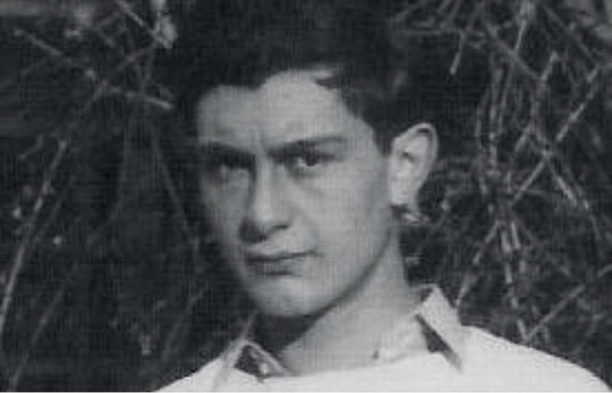

Fernand Bonnier de La Chapelle est l’un des plus jeunes résistants français engagés dans la lutte contre le régime de Vichy. À 20 ans, il abat l’amiral François Darlan à Alger, le 24 décembre 1942, dans un geste politique et symbolique qui marque un tournant dans la recomposition du pouvoir en Afrique du Nord et dans la lutte pour la légitimité de la France Libre.
Nom : Fernand Bonnier de La Chapelle
Dates : 4 novembre 1922 – 26 décembre 1942
Nationalité : Française
Lieu d’action : Alger, Afrique du Nord
Rôle : Résistant • Assassin de l’amiral Darlan
En novembre 1942, après le débarquement allié en Afrique du Nord (opération Torch), l’amiral François Darlan, ancien numéro deux du régime de Vichy, devient de fait l’autorité politique en Afrique du Nord, avec l’accord des Alliés. Cette situation provoque une profonde colère chez les résistants et les partisans de la France Libre, qui refusent de voir un ancien collaborateur conserver le pouvoir.
Le 24 décembre 1942, Fernand Bonnier de La Chapelle se rend au siège du gouvernement à Alger et tire sur l’amiral Darlan, le blessant mortellement. Il est immédiatement arrêté, interrogé, jugé en urgence et condamné à mort. Son exécution a lieu le 26 décembre 1942, soit deux jours seulement après l’attentat.
Bonnier de La Chapelle est issu d’un milieu patriote et hostile à la collaboration. Il est proche de cercles favorables à la France Libre et considère que la présence de Darlan au pouvoir est une trahison de l’idéal de Résistance. Son geste est à la fois politique, symbolique et personnel : il veut empêcher la consolidation d’un pouvoir issu de Vichy en Afrique du Nord.
La mort de Darlan ouvre une période de recomposition du pouvoir en Afrique du Nord. Elle permet, à terme, un rapprochement plus net avec les positions de la France Libre incarnée par Charles de Gaulle. Le geste de Bonnier de La Chapelle reste controversé, mais il a contribué à affaiblir durablement l’influence des anciens responsables de Vichy dans la zone.
Longtemps, Fernand Bonnier de La Chapelle a été une figure discutée : héros pour certains, criminel pour d’autres. Aujourd’hui, il est souvent considéré comme un jeune résistant animé par une volonté sincère de rompre avec la collaboration et de rendre à la France une légitimité débarrassée des hommes de Vichy. Son histoire illustre la complexité des engagements individuels dans la guerre.